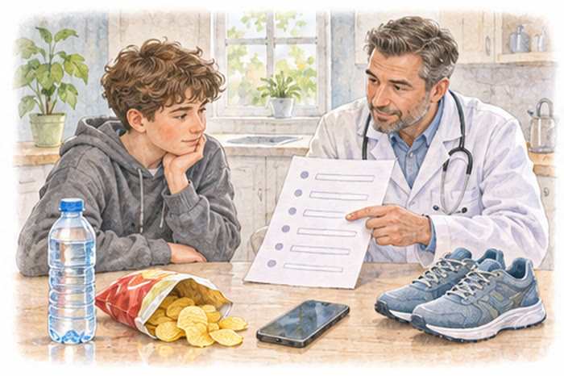

Listen to the text
Speed:

My uncle Roman is a doctor. He says that a person is a collection of habits. "Show me your ordinary Tuesday," he says, "and I will tell you how you will feel in twenty years." Last month he asked me to write down my habits honestly. Here is my list. Bad habits. I go to bed late, usually after midnight. I eat junk food at school: crisps and sweet rolls. I spend a lot of time on gadgets, about six hours a day. I don't drink enough water. I drink sweet drinks instead. Good habits. I do exercise three times a week. I never smoke, and I never will. I try to stay calm before tests. Well, I try. Uncle Roman read the list. "Not bad. Don't change everything at once. People who start to follow a strict diet, run every morning and go to bed at nine on the same Monday usually stop on Thursday. Change one habit a month." He also told me about his own bad habit. He overworks. He stays at the hospital for twelve hours and forgets to eat. "Doctors are the worst patients," he laughed. "I am working on it too." So in October I chose sleep. I put my phone in the kitchen at ten. The first week was hard. In the second week I started to get enough sleep, and I stopped falling asleep in Geography. In November I am going to work on water. A bottle on my desk, as he advised. "And the junk food?" I asked. "December," he said. "Before the holidays. That will be the real test."
Tap any sentence to hear it again.
Сподобалось? На сайті ще більше матеріалів для вчителів!
Reader, презентації, ігри, діагностичні та контрольні роботи до підручників 1-11 класів.
Перейти на сайт materials.allaenglish.com